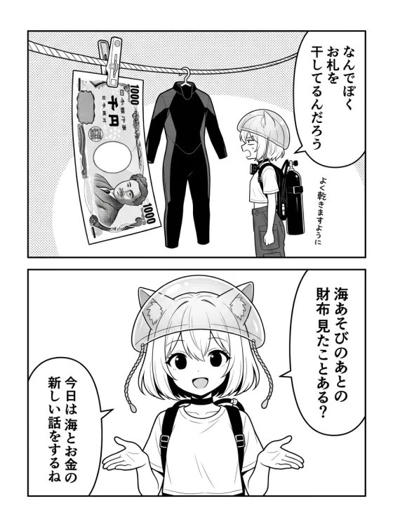
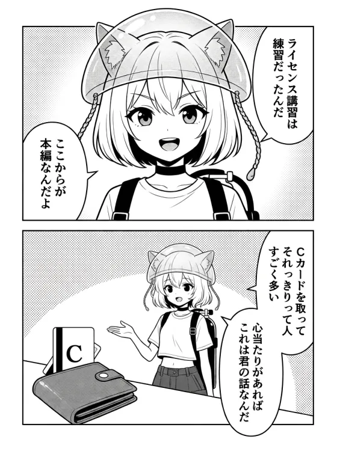
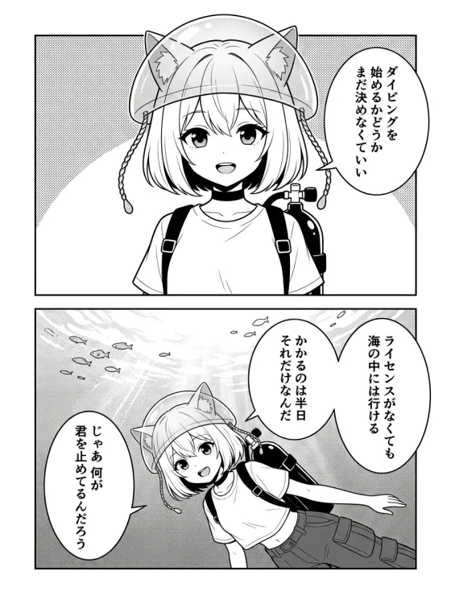
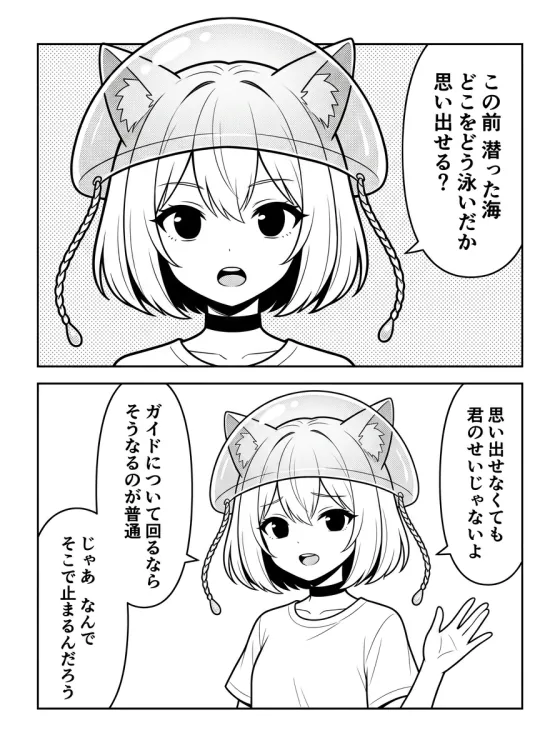
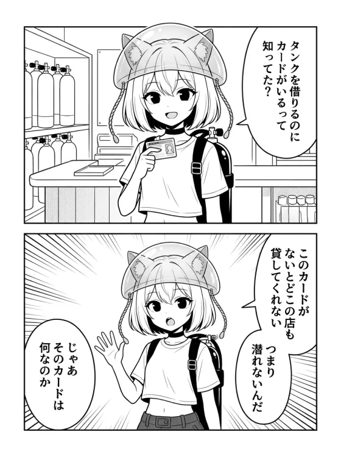
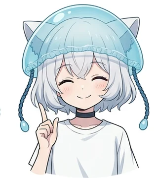

すべてのまんが（新しい順）
Cカードや体験ダイビングのような「はじめの一歩」から、ブランク復帰・AOW・器材レンタル・年齢の条件・秋冬の海とドライスーツ・海外の海・JPYC決済まで。気になる話から読んでください。

冬の海は、いちばん青い。ドライスーツで、海の季節は終わらない
三浦 海の学校は10月の半ばから6月の半ばまでドライスーツ——1年の3分の2はドライの海です。三浦の海は冬がいちばん澄み、緑っぽかった水が青くなります。透明度は11月ごろから上がって1〜2月がピーク。冬の水温は12度くらいまで下がりますが、ドライスーツなら体はぬれません。ダンゴウオやウミウシ、流氷やシルフラのようなドライスーツの海の話も。
こんな方に：秋でダイビングのシーズンが終わると思っている／冬の海は寒くて汚いと思っている／ドライスーツって何？という方
まんがを読む →
ウェットの海は、あと少し。まとめて潜ると、ぐんとうまくなる
三浦 海の学校は10月からドライスーツ。5mmウェットで潜れるのは10月の初めごろまでで、10月の初めでも相模湾の平均で24度くらいです。ウェットで潜れる土日は両手で足りるくらい。その数を1回で終わらせず、2回3回と使うと間を空けないぶん上達が早い。潜った当日に次に潜る日を決めると次回¥800引きになる「つづける割」の使い方も。
こんな方に：Cカードは持っているが年1〜2回しか潜っていない／「涼しくなったら潜ろう」と先送りしている／久しぶりでリフレッシュから戻りたい
まんがを読む →
筏の下を見てきたから言える。三崎の海上釣り堀・みうら海王
三崎港から船で約10分、海に浮かぶ筏で釣る海上釣り堀「みうら海王」。竿は借りられ、エサも現地で買え、投げ方はスタッフさんが教えてくれます。釣った魚は全部持ち帰り。海の学校のインストラクターは頼まれてこの筏の下に潜っているので、網の中に魚が泳いでいるのを水の中から見てきました。だから初めてでも大丈夫と言えます。
こんな方に：釣りをやってみたいが道具も知識もない／家族やカップルで海遊びをしたい／釣り堀に本当に魚がいるのか気になる
まんがを読む →
海外の海は、上級者になってからじゃない
パラオへは成田から直行で約4時間55分、時差はゼロ。Cカードは世界中どこでも通用し、有効期限もありません。現地が見ているのは経験本数の数字ではなく、Cカードとログブックです。ただし「アドバンス以上」の条件がついたツアーは多いので、待つのではなく行き先を決める前に確認します。
こんな方に：Cカードは取ったが海に行けていない／まだ数本だから海外は早いと思っている／行き先が決められない
まんがを読む →
器材は、レンタルでいい
始めるのに買う器材はひとつもありません。潜るのに要る道具はまとめて借りて1日¥5,500。ライセンス講習の総額¥64,900のうち、器材代は¥11,000（レンタル2日分）だけです。タンクとウエイトはそもそも料金に含まれています。買うのは、続けたくなってからで十分です。
こんな方に：器材一式で何十万かかると思って調べる前に諦めている／続けるなら結局買うんでしょと思っている
まんがを読む →
今年の海は、今年しかない
気象庁の平年値では、9月30日の相模湾は24度くらいで7月16日とほとんど同じ温かさ。10月31日でも6月18日と同じです。海の季節は暦よりあとから来るので、9月も10月も海の中はまだ夏の後半。秋に会える季節来遊魚は南から流れ着いた魚で、顔ぶれはその年しだいです。
こんな方に：今年の夏に行こうと思っていたのに気づいたらお盆が終わっていた／来年でいいかと思っている
まんがを読む →
上に、線はない
指導団体の決まりに年齢の上限はなく、下限の10歳だけが決まっています。入口で見られているのは年齢ではなく、健康を10個たずねる参加者チェックシート。45歳を超えていることは不合格の条件ではありません。うちで始めた方のいちばん上は73歳です。
こんな方に：「もう歳だから無理だろう」と思って調べるところで止まっている／親を誘いたいが体が心配
まんがを読む →
2枚目は、忘れないうちに
アドバンスの受講条件はライセンスを持っていることだけで、潜った本数の決まりはありません。PADIは6か月以上あいたら復習をすすめていて、講習修了時は4本。間をあけると、戻るための1日が余分に要ります。セット受講なら講習費が¥5,000引きです。
こんな方に：申し込み画面の「ライセンスだけ」と「ライセンス＋アドバンス」で手が止まっている／まとめて申し込むのは気が早いと思っている
まんがを読む →
財布は、海に連れていけない
当店で使えるJPYCは、暗号資産（仮想通貨）ではなく法律上の「電子決済手段」。1JPYC＝1円のまま値動きせず、QRを読んで送るだけで数秒で払えます。もちろん現金もこれまでどおりです。
こんな方に：「仮想通貨でしょ？ あやしくない？」と思っている／海で財布を持ち歩くのが煩わしい
まんがを読む →
講習は練習、ファンダイビングが本編
講習は潜り方を習う練習で、ファンダイビングが本編。参加に要るのはCカードだけで、経験本数の決まりはありません。ビーチ2ダイブ¥13,200（税込）、レンタル器材を足しても総額¥18,700です。
こんな方に：Cカードを取ったあと、ファンダイビングを自分で申し込んだことがない／取りたてで行ったら迷惑ではと思っている
まんがを読む →
決めるのは、潜ってからでいい
いきなり数万円のライセンス講習を決めなくても、ライセンスなしで、その日のうちに海の中を1回潜れます。¥19,800（税込・器材レンタル込み）。続けるかどうかは、それから決めれば大丈夫。
こんな方に：体験ダイビングを調べたことはあるけれど予約までは行っていない／続けるか分からないのに始めたくない
まんがを読む →
「ついて回る側」から抜ける
AOWは上級者の証ではなく、ガイドについて回る側から抜けるための講習です。受講条件はOWDを持っていることだけ。「まだ10本だから早い」は、要件のうえでは根拠がありません。
こんな方に：OWDを取ったあと10本前後で止まっている／次に何をすればいいか分からない
まんがを読む →
ブランクは、1日で戻る
何年も潜っていなくても、そのCカードは今日も生きています。抜けたのは体力ではなく手順の記憶だけ。PADIも「半年空いたら復習を」と言っています。
こんな方に：Cカードを取ったきり潜っていない／今さら聞くのが気まずいと感じている
まんがを読む →
Cカードって、なんですか？
タンクを借りるのにも「入場券」がいる。それがCカード。有効期限はなく、一度取れば一生もの。しかも南の島まで行かなくても、三浦なら日帰りで取れます。
こんな方に：ダイビングをやったことがない／興味はあるけれど、何から始めればいいのか分からない
まんがを読む →
案内役｜クララ
クラゲの帽子をかぶった、三浦 海の学校のまんがの案内役。一人称は「ぼく」。
むずかしい話をできるだけ短く、そして正確に伝えるのが仕事です。数字や条件は、PADIの公式資料と実際の料金にあたって確認したものだけを話します。
※ 新しいまんがは不定期に増えていきます。
まんがで気になったことは、そのまま聞いてください
「泳げないけど大丈夫？」「何年ぶりでも平気？」——質問だけのご連絡も歓迎です。